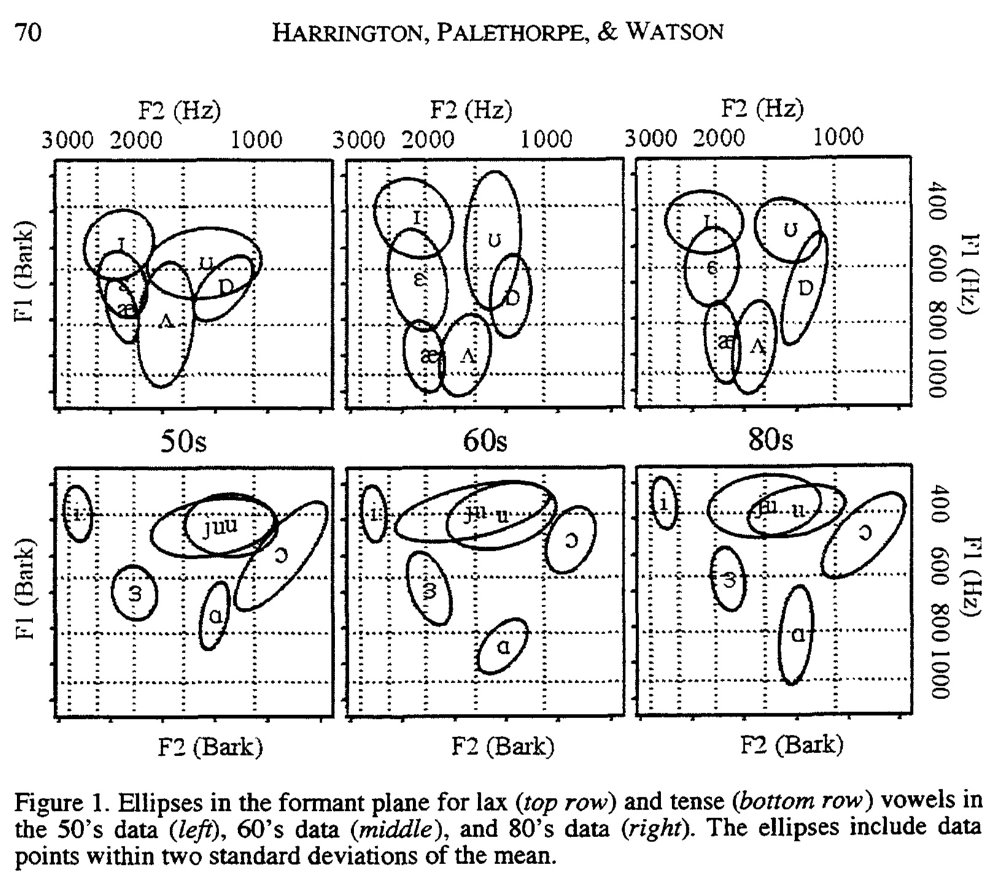

Installation
This package makes it easier to work with the Bark scale when analyzing and plotting acoustic data. To install the package, you can do so by downloading it from github.
# install.packages("remotes") # <- if not already installed remotes::install_github("joeystanley/barktools")
You can then load it like any other library.
library(barktools)
(I’ll load a couple others too.)
Load the data
For this little vignette, I’ll load some sample vowel data from my own speech. It’s got some outliers, but that’s the nature of automatically-processed data.
## # A tibble: 6 x 12
## vowel_id start end t F1 F2 F3 F4 word pre vowel fol
## <dbl> <dbl> <dbl> <dbl> <dbl> <dbl> <dbl> <dbl> <chr> <chr> <fct> <chr>
## 1 1 2.06 2.41 2.23 368. 1018. 2602. 3168. snoʊz sn GOAT z
## 2 2 3 3.36 3.18 377. 2032. 2761. 3408. deɪz d FACE z
## 3 4 4.94 5.19 5.07 314. 2179. 2915. 3380. teɪd t FACE d
## 4 5 5.91 6.17 6.04 274. 1378. 2235. 3270. zudz z GOOSE dz
## 5 7 8.13 8.4 8.26 350. 1624. 2485. 3384. stʊz st FOOT z
## 6 8 9.16 9.41 9.28 313. 2181. 2863. 3205. heɪdz h FACE dzAn F1-F2 plot
Here’s an F1-F2 plot that shows my vowel space. For now, I’ll just keep it simple.
ggplot(vowels, aes(F2, F1)) + geom_point() + scale_x_reverse() + scale_y_reverse() + theme_minimal() + labs(title = "Joey's vowels", subtitle = "Data and plot are in Hz")

Now, let’s say I want to plot using Barks. You can use the bark() function to convert the formant frequencies into Barks.
vowels_with_barks <- vowels %>% mutate(F1_bark = bark(F1), F2_bark = bark(F2)) ggplot(vowels_with_barks, aes(F2_bark, F1_bark)) + geom_point() + scale_x_reverse() + scale_y_reverse() + theme_minimal() + labs(title = "Joey's vowels", subtitle = "Data and plot are in Barks")

The Bark scale turns the nonlinear Hz data into something a little more linear, so the shape of the vowel space should change somewhat.
The problem is most people can’t readily interpret the Barks unit. What is the Hz equivalent of 6 Barks? We can look this up using the hz() function:
hz(6)
## [1] 631.1045But it would be better if we could incorporate more interpretable values into the plot itself. I think the first time I saw this was in Harrington et al’s (2000) paper on how the Queen of England’s speech changes over time:

Notice how the axes are in Barks, but the data is still plotted in Hz. This is a perfect case for using the scale_x_bark() and scale_y_bark() functions. Like the other scale_* functions in ggplot2, this will transform the axes of your plot. In this case, it’ll convert the plotting area to the Bark scale, but the values will be in Hz still.
ggplot(vowels, aes(F2, F1)) + geom_point() + scale_x_bark() + scale_y_bark() + theme_minimal() + labs(title = "Joey's vowels", subtitle = "Data is in Hz; plot is in Barks")

Now, you can see that the shape of the vowel space is identical to the plot above, except the axis labels are more useful: I have a better idea of what 500Hz means. Note that the axes are reversed as well, just like scale_*_reverse.
At this point, it might be useful to modify the axes with some additional labels. Since scale_*_bark is just a wrapper around scale_*_continuous, any argument that you would normally include in the latter function will work just fine in the bark function. Specifically, I’ll modify which values get labels with breaks and the gridlines with minor_breaks.
ggplot(vowels, aes(F2, F1)) + geom_point() + scale_x_bark(breaks = c(c(500, 1000, 1500, 2000, 3000)), minor_breaks = seq(0, 4000, 100)) + scale_y_bark(breaks = c(c(200, 400, 600, 800, 1000, 1500)), minor_breaks = seq(0, 3000, 100)) + theme_minimal() + labs(title = "Joey's vowels", subtitle = "Data is in Hz; plot is in Barks")

Exactly which values you want to put is up to you, obviously, so play around with it until it looks good.
Spectrogram plots
The other type of plot you might want to use scale_y_bark for is something that looks like a spectrogram, that is a time-by-hz plot.
data(mouth) ggplot(mouth, aes(percent, hz, color = formant, group = traj_id)) + geom_path(alpha = 0.5) + theme_bw() + guides(color = guide_legend(reverse=TRUE))

Now, a lot of the change in /ai/ happens along the F1 dimension, but because of the logorithmic nature of sound, F2 visually takes up most of the vertical space and F1 is sort of squished down at the bottom. We can emphasize F1 by transforming the y-axis into the Bark scale.
ggplot(mouth, aes(percent, hz, color = formant, group = traj_id)) + geom_path(alpha = 0.5) + scale_y_bark(rev = FALSE) + theme_bw() + guides(color = guide_legend(reverse=TRUE))

Note that this time, I added the argument rev = FALSE to scale_y_bark. By default, the function will flip the axis (like scale_y_reverse), but in this case that behavior is not desired. So, you can suppress that flip by specifying rev = FALSE.